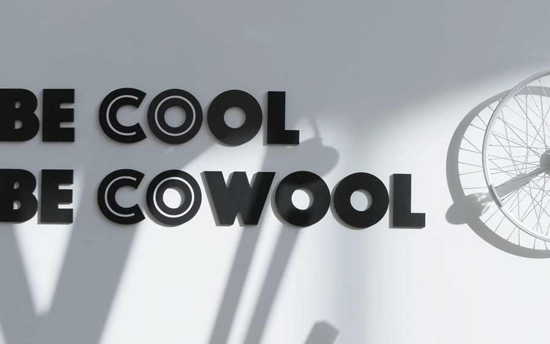
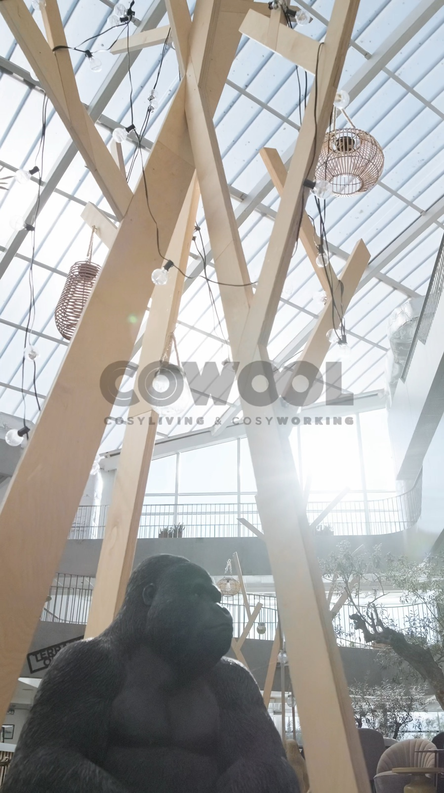
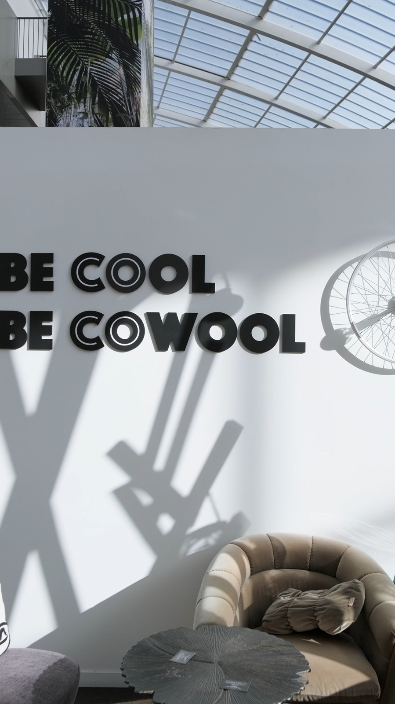
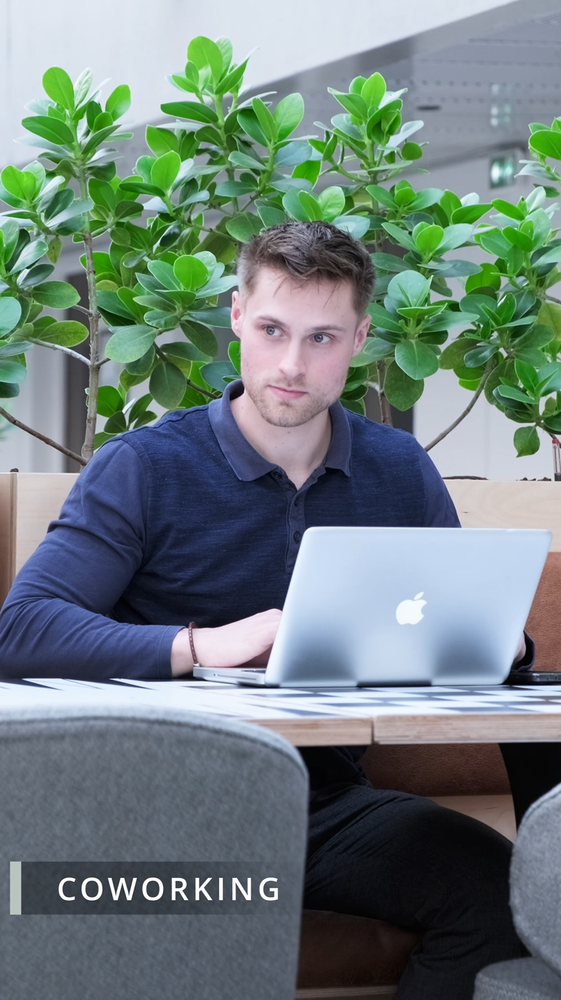
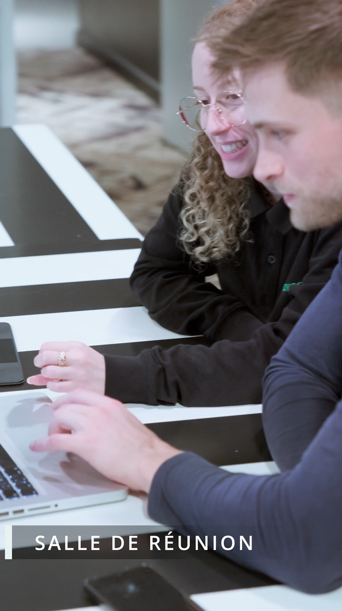
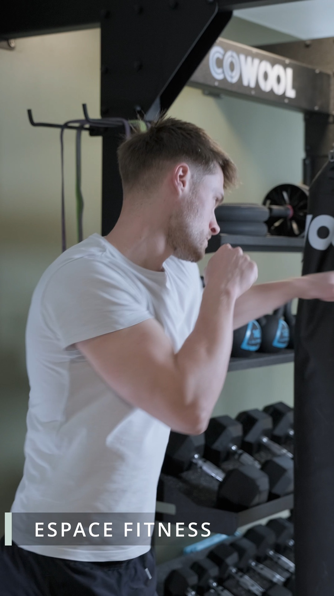
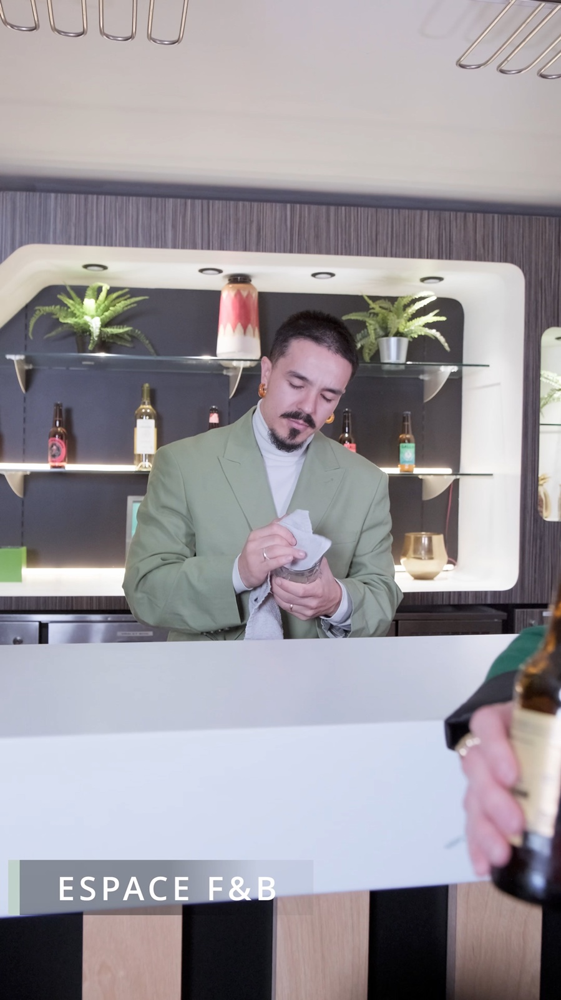

Film de marque · CoWool Cergy
Présentation de CoWool Cergy : un film vertical attractif au cœur du coliving & coworking
Une vidéo verticale rythmée et chaleureuse conçue pour faire découvrir en une minute l'ensemble des espaces de vie, de travail, de sport et de restauration de CoWool Cergy.
- Client
- CoWool Cergy
- Secteur
- Coliving, coworking & hospitalité
- Livrables
- Film de présentation 4K vertical (9:16) + déclinaisons réseaux sociaux
- Année · Durée
- 2025 · Livraison selon les deadlines client
Résultats obtenus
- 6 espacesmis en scène dans un parcours fluide
- +44%de taux de complétion sur les réseaux
- 4K 9:16format vertical natif pensé mobile
- 100%de l'esprit « Cosyliving & Cosyworking »
01 — Contexte
Le contexte & les enjeux
CoWool Cergy réunit dans un même lieu hybride du coliving (« Cosyliving ») et du coworking (« Cosyworking »), complétés par des salles de réunion, un espace fitness et un espace restauration / bar (F&B). L'objectif était de créer une vidéo verticale immédiatement attractive, capable de faire ressentir l'énergie du lieu et la diversité de ses espaces en à peine une minute.
02 — Attentes
Ce que le client attendait
- Présenter de façon claire, vivante et incarnée tous les espaces clés : coworking, salles de réunion, espace cool, fitness et bar F&B
- Adopter un format vertical natif parfaitement adapté aux réseaux sociaux (Instagram Reels, TikTok, LinkedIn) et à la consultation mobile
- Retranscrire l'atmosphère lumineuse sous la verrière et l'esprit communautaire « Be Cool, Be CoWool »
- Donner envie aussi bien aux télétravailleurs et entreprises qu'aux futurs résidents de pousser la porte du lieu
03 — Contraintes
Les contraintes du projet
- Multiplicité des décors et des ambiances lumineuses (grande verrière zénithale, salle de sport, bar feutré, espaces de travail)
- Rythme soutenu pour présenter l'ensemble de l'offre en 60 secondes sans jamais perdre le spectateur
- Coordination des figurants et des mises en situation (travail collaboratif, sport, service au bar) pour un rendu naturel
- Habillage graphique et titrages intégrés directement dans le cadre vertical 9:16
04 — Propositions
Les pistes que nous avons proposées
-
Une visite architecturale sans présence humaine
Filmer uniquement les espaces vides en plans larges : esthétique, mais trop froid pour traduire l'esprit de communauté propre à CoWool.
-
Une interview classique de l'équipe dirigeante
Un format parlé explicatif, moins immédiat et moins engageant pour capter l'attention sur les réseaux sociaux.
-
Un parcours immersif incarné à travers la journée d'un résident-coworker Piste retenue
Une visite rythmée et solaire où l'on suit des visages réels passant du coworking à la salle de réunion, puis de l'espace fitness au bar F&B, ponctuée de repères visuels clairs.
05 — Solution
La solution retenue
Nous avons retenu le parcours immersif incarné : dès l'ouverture sous la verrière iconique, le spectateur découvre chaque facette de CoWool Cergy à travers des scènes de vie dynamiques, des transitions fluides et un titrage épuré qui identifie chaque espace (Coworking, Espace Cool, Salle de réunion, Espace Fitness, Espace F&B).
06 — Production
Tournage & montage
Tournage
Tournage en 4K verticale sur l'ensemble du site de CoWool Cergy avec mouvements stabilisés, lumière naturelle sous verrière et appoint lumineux dans les espaces intérieurs.
Montage
Montage dynamique au rythme de la bande-son, intégration des bandeaux typographiques par espace et étalonnage lumineux valorisant le bois, le végétal et l'architecture.
Équipe
Réalisateur-cadreur, monteur-étalonneur et figurants sur site.
07 — Résultat
Le résultat






La vidéo résume parfaitement l'ADN de CoWool Cergy en une minute : on y voit à la fois la qualité de nos espaces de travail et la vraie convivialité du lieu.

Et si le prochain cas client, c'était le vôtre ?
Parlez-nous de vos enjeux. Nous revenons vers vous avec des idées concrètes, pas avec un devis générique.